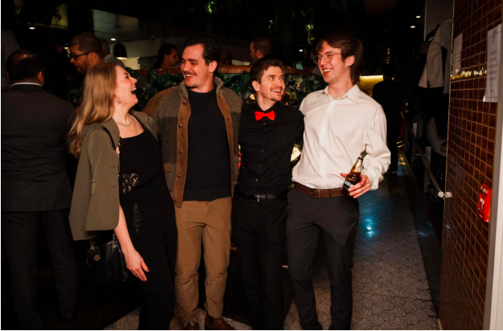

Most of us only think about our computer when it stops working. For Alejandro Calle, that moment of panic is where the job begins. It might be a laptop holding years of family photos, a business owner locked out of the system that pays the bills, or a first-time user staring at a device that feels impossible to understand. Behind every one of those problems is a person who needs patience, honesty and respect. That belief is the foundation of Tech In A Tux, the Canadian tech support company he built to make technology work for people.
Self-Taught and Curious: How Alejandro Calle Got Started
Alejandro's story begins with a question that never went away: how do things actually work? As a young person fascinated by computers, he was never satisfied with simply using technology. He wanted to know what was happening behind the screen, how to track down a problem, and how to make something better.
There was no roadmap and no instructor pointing the way. He learned through research, experimentation, plenty of mistakes and countless hours of figuring things out alone. Technology also moves fast. Just when one system feels familiar, another arrives, so staying adaptable became part of the job.
What he gained was worth more than any single skill. Being self-taught taught him to think critically, solve problems on his own and treat learning as something that never ends. It also gave him a conviction he now shares with others: you don't need a traditional path to build something meaningful, and you don't need to know everything before you start.
“ Don't wait until you know everything to begin. — Alejandro Calle, Founder & CEO, Tech In A Tux
Tech In A Tux: Affordable Tech Support Built Around People
Tech In A Tux was founded on a simple mission: make tech support accessible to all, regardless of financial situation. Alejandro saw a world where technology had become essential to communication, education and work, yet millions of people felt left behind because it was confusing, expensive or intimidating.
His answer was a company that offers professional, reliable help without judgment. Even the name says it: professionalism and personality in an industry that can feel cold and impersonal. Whether a client needs a basic computer repair, data recovery, a new website or a full digital solution, the standard is the same.
The pay-what-you-can approach comes from a plain observation: a broken computer doesn't care about your income. It can put a job, a course or a connection with family at risk. Alejandro is also realistic about running a business. Larger projects need fair pricing, and a company that can't sustain itself can't help anyone for long. To him, profit and generosity aren't opposites. A healthy business simply has more room to give back.
Honesty shapes the daily work too. If something doesn't need replacing, he won't suggest replacing it. If a cheaper fix exists, clients hear about it first. The goal is never the biggest sale, only the right solution.
“ It's not about selling the most expensive service. It's about recommending the right solution. — Alejandro Calle
The Moments That Matter Most
Ask Alejandro about his most memorable work and he rarely names the most complicated job. He describes the relief on someone's face when a problem that felt hopeless is finally fixed. Often that means recovering family photos or documents a person feared were gone for good. Technically, it's a hardware diagnosis or a software fix. To the client, it's protecting something that can't be replaced.
Helping a small business get online works the same way. A website is never just a handful of pages. It can represent a dream, years of hard work and a first chance to reach new customers. Experiences like these taught him that tech support is really about people, and the words he values most are the simple ones: thank you, you've made my life so much easier.

Teaching Technology to a Global Community
Alejandro's reach goes well beyond his local clients. His online channel has grown to more than 200,000 subscribers and over 60 million views, a community of people from many backgrounds and countries. What matters to him isn't the numbers but the value behind them.
He believes technology doesn't have to be complicated to be interesting, and learning doesn't have to be boring to work. Most people don't want jargon. They want someone to explain things clearly, show them how something works and help them feel more confident. Whether he's presenting a technical idea in a fun way or exploring emerging tech, the aim is to make people curious rather than intimidated.
The community has also taught him to listen. Some of his most useful feedback comes from people simply describing what they struggle with, and that has made him a better technician, communicator, creator and entrepreneur.
Leadership and “The Secret To Living Is Giving”
Building a company mostly on your own means wearing every hat. Alejandro is the technician, the customer service team, the marketer and the person who makes the financial calls. Balancing those roles, and accepting that he can't do everything at once, has taught him patience and prioritization. He picks decisions that support long-term growth over short-term excitement.
His idea of leadership is just as grounded. It isn't about having every answer. It's about taking responsibility, staying willing to learn and leading by example.
That outlook sums up the philosophy he lives by: “The Secret To Living Is Giving.” Giving doesn't always mean money. It can be sharing knowledge, offering time or simply being there when someone needs help. Something that takes him ten minutes to explain can save another person hours of frustration, and the idea keeps him tied to the reason he started.
“ Success isn't simply about how much money a business makes. It's also about what that business makes possible for others. — Alejandro Calle
AI, the Digital Divide and a More Human Future
Looking ahead, Alejandro believes we are entering one of the most exciting stretches in the history of technology. Artificial intelligence and automation now give small businesses and individuals abilities that once took a whole team. He takes the risks seriously too, from privacy and cybersecurity to misinformation and a widening digital divide.
His worry isn't that technology is moving too fast. It's that people get left behind when no one makes the effort to teach and support them. That's where he sees Tech In A Tux going: more services, responsible use of AI, more educational content, and steady guidance for people and businesses navigating a digital world. He pictures a trusted resource and a learning community that helps people welcome innovation with confidence.
What he hopes to leave behind is more than a successful company. It's a positive example that encourages others to share what they know, follow their passions and help people along the way.
Visionary Perspective • Quotes from Alejandro Calle
“Let's Make Tech Support Accessible To All, regardless of their financial situation.”
“Don't wait until you know everything to begin.”
“It's not about selling the most expensive service. It's about recommending the right solution.”
“Success isn't simply about how much money a business makes. It's also about what that business makes possible for others.”
“The future of technology shouldn't just be smarter. It should be more human.”
Alejandro Calle
Founder & CEO, Tech In A Tux City, Province, CanadaGuiding Creed: “The Secret To Living Is Giving.”